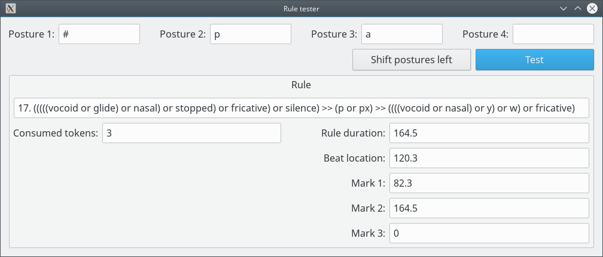

Rule tester

With this window the user can find out what Rule is selected for a given Posture sequence.
Marked Postures can be indicated by an apostrophe at the end of the Posture name.
Operations:
- Shift the Postures:
Click on "Shift postures left" and the Posture 2 will be moved to Posture 1, the Posture 3 will be moved to Posture 2 and so on. - Search for the first matching Rule:
Fill the Posture fields and click on "Test". Information about the Rule will appear on the window.